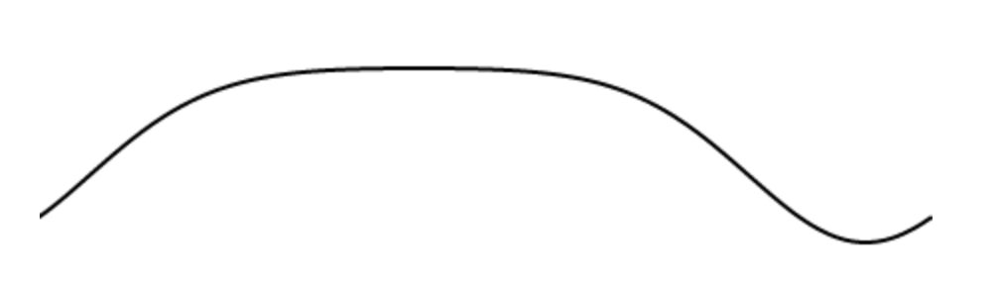

What is a Tempest Stroke?
Named for its creator, Tempest MAx, a TempestStroke is a behavior that allows specifying oscillatory motion on an arbitrary number of axes with a formula loosely based on orbital motion calculations. The default base formula is:
Where θ is the angle in radians, p is the phase, and c is the eccentricity. Here is a simple graph that shows how these parameters effect the shape of the motion (try tweaking phase and eccentricity):
Setup
TempestStroke is available as part of the standard distribution, but to use it within an ES6 module, you must import it. This can be done at the same time that you import the Ayva class. For example, in a browser:
import { Ayva, TempestStroke } from 'https://unpkg.com/ayvajs';
or from within a Node.js app:
import { Ayva, TempestStroke } from 'ayvajs';
Once TempestStroke is imported, you can create new strokes using TempestStroke's constructor, which takes a configuration object and bpm (beats per minute).
const myStroke = new TempestStroke({
stroke: {
from: 0, // Start of the range of motion [0 - 1]
to: 1, // End of the range of motion [0 - 1]
phase: 0.3,
ecc: 0.7
}
}, 30);
ayva.do(myStroke);
This would cause Ayva to perform a 30 bpm stroke with motion that looks like this:
You can add motion to as many axes as you like with various parameters. The following example demonstrates an orbit grind on the axes available in an OSR2+:
ayva.do(new TempestStroke({
stroke: { from: 0.0, to: 0.3, ecc: 0.3 },
roll: { from: 0.1, to: 0.9, phase: 1.0, ecc: -0.3 },
pitch: { from: 0.9, to: 0.1, ecc: -0.3 }
}));
Note: only the from and to properties are required for an axis. phase and ecc both default to 0. The default for bpm is 60.
Built-in Patterns
There are some built-in patterns that can be referenced by name:
// Execute an orbit-grind at 24 bpm
ayva.do(new TempestStroke('orbit-grind', 24));
Here is the full list of available patterns:
back-thrust-down
back-thrust-down-swirl
diagonal-down-back
diagonal-down-forward
down-backward
down-forward
forward-back-grind
forward-back-tease
grind-circular
grind-forward-back
grind-forward-back-phased
grind-forward-back-tilt
grind-forward-tilt
grind-vortex
lean-forward-thrust-down
lean-forward-thrust-down-swirl
left-right-tease
long-stroke-1
long-stroke-2
long-stroke-3
long-stroke-4
long-stroke-5
orbit-grind
orbit-tease
short-high-roll-backward
short-high-roll-forward
short-low-roll-backward
short-low-roll-forward
short-mid-roll-backward
short-mid-roll-forward
swirl-tease
tease-back-swirl-left
tease-back-swirl-right
tease-down-back
tease-left-right-rock
tease-orbit-left
tease-orbit-right
tease-up-down-circle-left
tease-up-down-circle-right
thrust-forward
thrust-forward-swirl
vortex-tease
Explore!
Customizing Built-in Patterns
You can get the parameters for a built-in pattern as a starting point by using TempestStroke.library:
// Get a copy of the built-in orbit grind parameters.
const myOrbitGrind = TempestStroke.library['orbit-grind'];
// Tweak the range of the stroke axis of the orbit grind to be wider.
// Library pattern axis names use the machine names (i.e. "L0" instead of "stroke")
myOrbitGrind.L0.to = 1;
ayva.do(new TempestStroke(myOrbitGrind, 30));
Value Provider
Internally, TempestStroke uses a value provider to describe Tempest Motion. This value provider is available to be used independently of a TempestStroke in your own moves. See the API Documentation for Ayva.tempestMotion().
Other Motion Shapes
It is possible to use functions other than cosine by specifying the motion parameter. This parameter should be a function that creates the value provider to use for the motion. There are currently two additional built-in types available:
Parabolic
Parabolic motion can be used to create a "bounce" effect (try tweaking phase and eccentricity):
You can tell an axis to use motion shaped like this by passing Ayva.parabolicMotion into the motion parameter:
ayva.do(new TempestStroke({
stroke: { from: 0.0, to: 1, motion: Ayva.parabolicMotion },
pitch: { from: 0.1, to: 0.9, phase: -1 }
}));
Linear
Linear motion can be used to create more "robotic" movements (try tweaking phase and eccentricity):
You can tell an axis to use motion shaped like this by passing Ayva.linearMotion into the motion parameter:
ayva.do(new TempestStroke({
stroke: { from: 0.0, to: 1, motion: Ayva.linearMotion },
pitch: { from: 0.1, to: 0.9, phase: -1 }
}));
Noise
It is possible to add variation to the range of motion for each axis with the noise parameter.
The noise parameter must be a value between 0 and 1.
It specifies how much the range should vary within the provided from and to parameters (zero being no variation—the default—and 1 being
the maximum variation). Ex:
ayva.do(new TempestStroke({
stroke: { from: 0, to: 1, noise: 0.5 },
}));
This will cause both the from and to parameters to vary by up to 50% away from their specified value (towards the midpoint). To specify
different variation at either end of the range, the noise parameter can also be an object with seperate properties for from and to.
In the following example, there is no noise on the from end of the range (the bottom of the stroke), but maximum noise on the to end (the top of the stroke):
ayva.do(new TempestStroke({
stroke: {
from: 0,
to: 1,
noise: {
from: 0,
to: 1,
}
},
}));